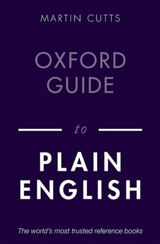

📖《牛津英语写作指南》教你写出简洁清晰的英语。书中从句子结构到段落组织，从常见错误到改进技巧，系统讲解了plain English的核心原则。
这本书拯救了我的英语。
作为非英语母语者，写作时常常陷入"越写越复杂"的误区，以为长句子、大词汇才显得专业。这本书彻底颠覆了我的认知：好的英语写作应该简洁、清晰、直接。
书中提供了大量"修改前 vs 修改后"的对比案例，让人直观地看到什么是好的写作。比如如何避免被动语态、如何组织段落、如何让复杂的内容变得易读。这些技巧不仅适用于英语写作，对任何语言的写作都有启发。读完这本书，我的邮件、报告、论文都有了明显的改进。强烈推荐给所有需要用英语写作的人。